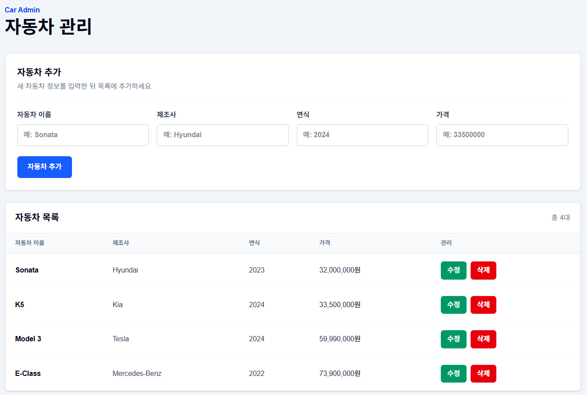

자동차 관리 CRUD 프로젝트 와이어프레임
자동차 관리 CRUD 화면의 구조와 사용자 흐름을 정리한 화면 설계 문서입니다.
1. 화면 구성 개요
자동차 관리 CRUD 화면은 한 페이지 안에서 자동차 정보를 조회, 추가, 수정, 삭제할 수 있도록 구성합니다.
| 영역 | 설명 |
|---|---|
| 상단 제목 영역 | 화면의 목적을 보여주는 Car Admin 라벨과 자동차 관리 제목을 표시합니다. |
| 자동차 추가/수정 입력 폼 | 자동차 이름, 제조사, 연식, 가격을 입력합니다. 수정 모드에서는 선택한 자동차 정보가 폼에 채워집니다. |
| 자동차 목록 테이블 | 등록된 자동차 목록을 이름, 제조사, 연식, 가격, 관리 항목으로 표시합니다. |
| 수정/삭제 버튼 영역 | 각 자동차 행에서 수정 버튼과 삭제 버튼을 제공합니다. |
| 반응형 처리 방식 | 작은 화면에서는 입력 폼이 세로로 배치되고, 테이블은 가로 스크롤로 확인할 수 있습니다. |
2. 메인 화면 와이어프레임
아래 와이어프레임은 현재 React 화면의 기본 구조를 텍스트로 표현한 것입니다.
┌────────────────────────────────────────────────────────────┐ │ Car Admin │ │ 자동차 관리 │ └────────────────────────────────────────────────────────────┘ ┌────────────────────────────────────────────────────────────┐ │ 자동차 추가 │ │ 새 자동차 정보를 입력한 뒤 목록에 추가하세요. │ ├────────────────────────────────────────────────────────────┤ │ 자동차 이름 [ 예: Sonata ] │ │ 제조사 [ 예: Hyundai ] │ │ 연식 [ 예: 2024 ] │ │ 가격 [ 예: 33500000 ] │ │ │ │ [자동차 추가] │ └────────────────────────────────────────────────────────────┘ ┌────────────────────────────────────────────────────────────────────┐ │ 자동차 목록 총 4대 │ ├──────────────┬──────────────┬──────────┬────────────────┬──────────┤ │ 자동차 이름 │ 제조사 │ 연식 │ 가격 │ 관리 │ ├──────────────┼──────────────┼──────────┼────────────────┼──────────┤ │ Sonata │ Hyundai │ 2023 │ 32,000,000원 │ 수정 삭제 │ │ K5 │ Kia │ 2024 │ 33,500,000원 │ 수정 삭제 │ │ Model 3 │ Tesla │ 2024 │ 59,990,000원 │ 수정 삭제 │ └──────────────┴──────────────┴──────────┴────────────────┴──────────┘
3. 수정 모드 와이어프레임
목록에서 수정 버튼을 누르면 입력 폼이 수정 모드로 바뀌고, 선택한 자동차 정보가 입력창에 채워집니다.
┌────────────────────────────────────────────────────────────┐ │ 자동차 정보 수정 [수정 모드] │ │ 선택한 자동차의 정보를 변경한 뒤 저장하세요. │ ├────────────────────────────────────────────────────────────┤ │ 자동차 이름 [ Sonata ] │ │ 제조사 [ Hyundai ] │ │ 연식 [ 2023 ] │ │ 가격 [ 32000000 ] │ │ │ │ [수정 저장] [수정 취소] │ └────────────────────────────────────────────────────────────┘
4. 화면 영역별 설명
| 화면 영역 | 설명 |
|---|---|
| 상단 제목 영역 | 화면 상단에 Car Admin과 자동차 관리를 표시해 현재 화면이 자동차 관리 화면임을 알려줍니다. |
| 자동차 추가 폼 | 자동차 이름, 제조사, 연식, 가격을 입력하고 자동차 추가 버튼으로 새 자동차를 등록합니다. |
| 자동차 목록 테이블 | API에서 불러온 자동차 목록을 표 형태로 보여줍니다. 가격은 원 단위로 표시합니다. |
| 수정 기능 | 목록의 수정 버튼을 누르면 선택한 자동차 정보가 입력 폼에 채워지고, 수정 저장 버튼으로 변경 내용을 저장합니다. |
| 삭제 기능 | 목록의 삭제 버튼을 누르면 선택한 자동차가 삭제되고 목록이 다시 갱신됩니다. |
5. 사용자 흐름
목록 조회 흐름
- 사용자가 프론트엔드 화면에 접속합니다.
- React가
GET /api/cars요청을 보냅니다. - Vite proxy 또는 배포 환경의 Rewrite 설정을 통해 Express의
GET /carsAPI로 전달됩니다. - 응답받은 자동차 목록이 테이블에 표시됩니다.
자동차 추가 흐름
- 사용자가 자동차 이름, 제조사, 연식, 가격을 입력합니다.
자동차 추가버튼을 클릭합니다.- React가
POST /api/cars요청을 보냅니다. - Express 서버가 새 자동차를 메모리 배열에 추가합니다.
- React가 목록을 다시 불러와 테이블을 갱신합니다.
자동차 수정 흐름
- 사용자가 목록에서 수정할 자동차의
수정버튼을 클릭합니다. - 선택한 자동차 정보가 입력 폼에 채워지고 수정 모드로 전환됩니다.
- 사용자가 값을 변경한 뒤
수정 저장버튼을 클릭합니다. - React가
PUT /api/cars/:id요청을 보냅니다. - Express 서버가 해당 자동차 정보를 수정합니다.
- React가 목록을 다시 불러와 변경된 정보를 표시합니다.
자동차 삭제 흐름
- 사용자가 목록에서 삭제할 자동차의
삭제버튼을 클릭합니다. - React가
DELETE /api/cars/:id요청을 보냅니다. - Express 서버가 해당 자동차를 메모리 배열에서 삭제합니다.
- React가 목록을 다시 불러와 삭제된 결과를 표시합니다.
6. 반응형 화면 고려사항
| 항목 | 고려사항 |
|---|---|
| 입력 폼 | 모바일에서는 입력 폼이 세로로 배치되어 한 줄씩 입력할 수 있어야 합니다. |
| 테이블 | 작은 화면에서 테이블이 화면 밖으로 넘치면 가로 스크롤로 확인할 수 있어야 합니다. |
| 버튼 | 수정, 삭제, 추가 버튼은 터치하기 쉬운 크기를 유지해야 합니다. |
| 여백 | 모바일 화면에서도 카드와 테이블 사이의 여백이 너무 좁거나 넓지 않도록 유지합니다. |
7. 향후 화면 개선 아이디어
아래 항목은 현재 구현된 기능이 아니라, 이후 화면을 더 발전시킬 때 고려할 수 있는 개선 아이디어입니다.
- 검색 영역 추가
- 필터 기능 추가
- 페이지네이션 추가
- 상세 보기 모달 추가
8. 실제 구현 화면
아래 이미지는 위 와이어프레임을 바탕으로 구현된 실제 React 자동차 관리 화면입니다.
